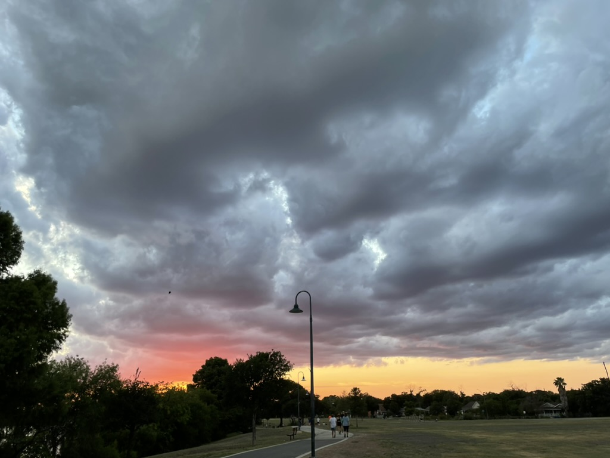

Here are a few more of my photos!
Photo 1
Photo 2

Closer look at Photo 1
Closer look at Photo 2
I like taking photos as a hobby,
I started about 2 years ago and
I loved it since then.
Super Secret Text Here!